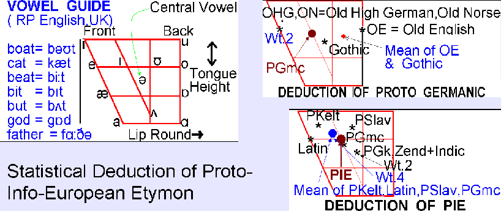

ARYAN INVASION THEORY : REASSESSING LINGUISTIC EVIDENCES.
Historical Linguistics has developed sufficient tools for proper reconstruction of prehistoric states of Indo-European languages. These methods have been brilliantly used by European scholars for reconstruction of Proto Germanic, for instance. But in the case of Proto-Indo-European language (PIE), deliberately biased and unscientific methods were used, which Leonard Bloomfield had found to be unsatisfactory, but instead of refining the methodology he tried to divert his followers away from this field.
One may waste years for trying to find out the basis of the widely publicised dating of the Rgveda ( cir. 1200 BC, ± 200 years). Linguists quote historians and historians quote linguists for this dating. No one bothers to show any proof. For instance, Maxmüller stressed that linguists have discovered irrefutable proofs in favour of the dating of Rgveda, while the most reputed Indo-Europeanist Karl Brugmann plainly quoted a historian A. Kaegi for the dating of Rgveda. A careful examination of the views of Indo Europeanists leads one to believe that the supposedly primitive nature of Rgvedic culture encouraged scholars to put its age at par with those of the primitive Greeks who faught against Troy around 1200 BC. 1200 BC was the earlist date to which European history could be traced in 19th century; before 1200 BC was pure prehistory. But in 1952-3, Michael Ventris,with the help of Chadwick, deciphered the Linear B tablets of Mycenaean Greek, which proved that Mycenaean Greeks ( 1200-1500 BC) enjoyed an urban civilization much before 1200 BC. Hence the pastoral ancestors of these Greeks must be placed at least around 2000 BC . Hence, following the logic of Indo-Europeanists, it seems irrational to put the age of the socalled Vedic culture after 2000 BC. But the pastoral culture of vedic peoples should not have coexisted with the urban culture of Harappans in the same Sindhu-Sarasvati valley. Hence the socalled vedic age cannot be placed after 3000 BC in any case. The proof of Linear B is irrefutable, but Indo-Europeanists do not want to discard their 19th century views. The reason is twofold. Firstly, there is a dearth of experts wishing to devote much time in this field. Secondly, whenever an honest enquiry is conducted in this direction, Vedic language unquestionably proves to be the ancestor of all those languages whose ancient states and linkages are well known . (Unfortunately, IE is the only family with well documented history. Semitic also shows definite proofs of affinity with Vedic or PIE, but the linguistic history of Semitic is not sufficiently documented. Other families are even less documented.) The preponderance of evidences in favour of Vedic repulses biased researchers away from this discipline.
Here is one summarised example, about cognates of one Sanskrit word and its PIE etymon. Method is very simple : take the statistical average of various cognates on a vowel diagram as well as among consonants, assuming you know nothing about pre-historic languages, with one exception : try to reconstruct etymons of known branches like Proto-Germanic (PGmc) before reaching out to PIE, as shown in the picture below.
=============================
English : brother
Old Eng : brödor
German : Brüder
OHG : bruoder
Gothic : bröthar
OldNorse :bröther ('th' pronounced as in modern English 'brother')
PGmc : bröthar
(L.Bloomfield) :bröther ('th' pronounced as 'th' in Hindi/Sanskrit)
O.Bulgar : brätru < *brätur
Russian : brät
Lithuanian : bröter
Proto Slav : brätar
(P.SlavoGerm : brätar)
O.Irish : bräthir
Gaelic : bräthair
Proto Kelt : brätha ir
Greek : phrätor, phräter (no symbol for Sanskrit 'bh', hence 'phi' was used for 'bh' but initially pronunciation must have been 'bh')
P.Gk phrätar
Latin : fräter
P.Gk-Lat-Kelt : bhrätar or bhrätaer
TocharianB : procer ( perhaps from *broter ) ( inadequacy of script )
Zend : brätar
Vedic : bhrätar, root : /bhrätr/
P.IndoIran : bhrätar
=============================

=============================
Modern English, Old English, modern German, Old High German (OHG),Gothic, Old Norse and a lot of other living and extinct languages have descended from the common prehistoric ancestor Proto-Germanic (PGmc). Hence PGmc is reconstructed with the help of its descendants, giving due weightage to older forms of words. In Germanic group, we see that the last syllable of 'brother' tended to be /-ar/, /-or/ in many older languages, while the trend towards /-er/ is more pronounced in newer languages. Forming a conclusion on the basis of so little data is not commendable. But this author has examined most words of the entire Indo-European family and found that /-ar/ or /-or/ in a vast majority of cases tend towards /-er/ with the passage of time. A C Gimson found that front vowels like /e/ exhibit highest frequency of occurrence in running texts in English language ( An Introduction to the Pronunciation of Engligh Language, ELBS). Other European and Indian languages also show this tendency. Back vowels like /u/ or /o/ are not as frequent as front vowels like /e/ or /i/. The cause is that back of the tongue requires more effort for lifting, while the front of tongue is free to move. In the present case, Karl Brugmann in his monumental work "Grundriss der Verleichenden Grammatik der indogermanischen Sprächen" (Comparative Grammar of Indo-European Languages, translated by Wright) wrote in the footnote that phrätor was older than phräter in Greek. It is another matter that he did not abide by his own opinion and neglected the older form phrätor in his reconstruction of PIE, using only phräter ,in order to be in harmony with his fellows.This type of approach is a rule rather than an exception in mainstream Indo-Europeanism. Indo-Europeanists behaved as if they were the final law givers of linguistics and the only proof they cared for was quoting each other. This author wasted 12 years upon this discipline which led him to search for some objective and unbiased method of reconstruction of etymons. At last he decided that all linguistic groups ought to be given equal weightage, because the relative weights of various groups in pre-historic times are unknown. Besides, this author used the cardinal vowel diagram of Daniel Jones and deduced statistical mean of a particular vowel in various cognates, instead of following the subjective (impressionistic) method of Indo-Europeanists. For instance,the first vowel in the following example must be either /ä/ or /ö/ , but a careful comparison of various groups suggest that only the Proto-Germanic could possess /ö/, all other groups show /ä/ . Even oldest specimen of Slavic show /ä/. Hence it is safe to conclude that the first vowel in PIE etymon was /ä/.
But the second vowel poses some problem. Old English and Gothic show that older form was /o/ or /a/, /e/ being a later development. Oldest form in Slavic is /ru/, which suggests /ur/ < /or/ < /ar/ in prehistoric times. Gaelic and Old Irish show /ai/ and /i/, while Greek shows /o/ in older specimens and /e/ in later ones including classical Koine. On the vowel diagram of Daniel Jones, statistical average of /o/ and /e/ is the central vowel /a/ ( /Ə/ of IPA) for Proto-Greek (i.e., etymon of /brother/ must have possessed /ar/ in the end. Seen in this broader perspective, Keltic and Latin forms also suggest a change from /a/ > /ai/ > /i/ or /e/. Karl Brugmann noted that /or/ is older than /er/ in Greek.
In the same way, first consonant is /b/ in Slavo-Germanic and /ph/ in Greek-Latin. Statistically, it would suggest /bh/ in the PIE, which is found in Vedic. Some prejudiced scholars raise doubts over the actual pronunciation of this PIE /bh/, which they imagine to be something like /bah/ with a reduced /a/, instead of like Sanskrit /bh/, which is a full fledged phoneme. Influence of Semitic alphabets upon European scholars is so overwhelming that the same scholar (Winfred P Lehmann, in his Historical Linguistics) writes that the syllabic form of writing used by Mycenaeans was unsuitable for Greek. But truth is just the opposite. Greek was an Indo-European language and Semitic alphabet was quite unsuitable for accurate transcription of Greek (or of any Indo-European language). It is quite probable that the actual pronunciation was /bhrätar/ in ancient Greece , which was written as /phrätor/ or /phräter/ in various dialects due to limitations of the Semitic alphabet. A comparison of Sanskrit words with Greek counterparts as found in the Indica of Megasthenes has convinced this author that spoken Greek was much different from the written form, and spoken Greek had much less differences with Sanskrit than the written Greek would suggest. Ancient Greeks have not left adequate hints about the actual pronunciation. On the contrary, Sanskrit was a fully described language. Hence, it is quite advisable that a comparison with Sanskrit may help in discovering the actually spoken forms of ancient Greek. Ancient trancription of Caesar as /kaisar/ suggests that the Latin word Caesar was initially pronounced as Kaisar and not as Saisar or Seezar. In post Hellenic ages, Romans and others started pronouncing Greek words according to the written form. This malpractice has continued down to the modern times .
Let us see how PIE etymons ought to be reconstructed from available derivatives. A self-explanatory picture "VowelsPIE.gif illustrates the simplified version of the statistical method used here in the case of /bhrätar/. This author allocated equal weights to all IE groups in deducing averages. If older languages are given more weightage, the verdict would tilt in favour of Indic. The oldest specimen of Lithuanian date back to 16th century AD, yet same weight was given to Lithuanian as to Indic, the most archaic branch spoken by almost same number of people as all other IE languages combined together. But if differential weightage is used ( which ought to be used ), chauvinists masquerading as experts will run away with this science. Statistical method is not always correct, because it is tantamount to gambling, but it is the most preferred method when there is no theory. And if the statistical method yields some theory which explains all or almost all of the facts, together with giving plausible reasons for the exceptions,then it is quite scientific. Indo-Europeanists used this very method, but were propelled by subjective considerations of dubious nature, which we should now scrutinize.
The picture "VowelsPIE.gif" has three parts. In the top portion, you will find the vowel guide to the Received Pronunciation of standard British Engligh ( e.g., of BBC Radio or TV), as a reference to the vowels of this diagram. Then, the reconstruction of PGmc (Proto Germanic) is illustrated. Indo-Europeanists invariably reconstruct PGmc as /bröther/, whereas this author found it more appropriate to reconstruct it as /bröthar/. Old Norse and Old High German show /e/ in the last syllable, whereas OE and Gothic show /o/ and /a/ respectively. Statistical mean is nearer to /a/ than to /e/( here /a/ has been used for the central vowel in order to avoid International Phonetic Alphabet). Gothic provides the oldest specimen and most archaic features in the Germanic group, which are delibaretaly overlooked by Indo-Europeanists in order to prove their theory. The statistical mean of OE and OHG is /a/ , which is same as that of Gothic. The case for /e/ in the last syllable is not supported by facts. But the tendency in classical Latin and Greek as well as in modern European ( and Indian) languages is towards /e/ in a large number of words with the forward passage of time, hence there is an unconscious bias for /e/ in the mind of a careless researcher. This bias reverses the direction of linguistic change and /e/ is imagined in previous stages instead of in the later ones. Since the sole aim is to find out the etymon, here a simple statistical method has been presented, giving equal weightage to all groups. For instance, OE was nearer to OHG than to Gothic, but it was easier to get means in pairs. The result would be the same, whater course one adopts for getting the average.
The last portion of this picture file deals with PIE reconstruction. This author placed the last vowel of Proto-Greek in the central region ( i.e ., /a/ and not /e/.), because even Karl Brugmann suggested that /phrator/ was more archaic in Greek than /phrater/). Europeanists would detest this approach, because Classical Greek and Latin is deeply rooted in their Unconscious minds and they refuse to see that /phrator/ was more archaic form in Greek, in spite of a verbal acceptance by their chief spokesman Karl Brugmann.
In the case of /bhrätar/ , the last vowel was invariably reconstructed as /e/ by all major Indo-Europeanists. But even if all IE groups are allocated equal weightage, the last vowel proves to be nearest to the central vowel /a/ than to any other PIE vowel. Statistically, it is slightly raised ( i.e., tongue raised ) due to the effect of /r/ in the same syllable, and it is also slightly fronted ( i.e., front of tongue used ) due to the weight of Latin /e/ and Keltic /i/ and /ai/. Greek shows a clear proof of a drift from /o/ to /e/ ( i.e., phrätor > phrätēr , statistical mean of /o/ and /ē/ being /a/ ), as noted (but neglected) by Karl Brugmann. Keltic (Gælic) has /brathair/, which suggests a possibility of a drift from /a/ towards /i/. Latin had stylised the use of /e/ in more frequent nouns and all vowel endings. Such a classicist standardisation by Roman grammarians not only destroyed older linguistic evidences, but created a bias for /e/ among 19th century linguists who had to graduate through universities where Greek and Latin were compulsory subjects and scholars were brainwashed about the cultural superiority of Graeco-Roman civilisation. First major theorist of PIE was August Schleicher,who was a pupil of Hegel and shared the evolutionism of Darwin. Hegel was convinced about the incapacity of India to produce anything worth mentioning in the field of culture. India was a slave of Britain. Hence linguists like Schleicher or Brugmann felt free to put Indic at par with Lithuanian or Irish. A C Gimson informs that front vowels have highest frequency of occurrence in running texts in modern English. European and Indian languages including Präkrits also show a drift towards front vowels, mostly towards /e/.It is because of least effort required for uttering /e/. Unfortunately, Indo-Europeanists inverted the direction of evolution and imagined that /e/ was the most frequent PIE vowel. Saussure went to the absurd logical conclusion of this line of reasoning and proposed that all PIE roots ( verbs ) had the form C-e-C ( C for consonant ); e.g., PIE /bher/ for Indic /bhr/ or /bhar/. Almost all (Indo-) Europeanists unquestioningly accepted this inverted logic . No one asked a simple question : if vowels are changing into /e/ from something else, why /e/ should be imposed upon previous state of language ?
When Saussure proposed this wrong idea, Europeanists were confounded with a deep crisis. When Indo-Europeanism started its journey, Vedic was widely believed to be the ancestor of classical languages of Europe. At that time, facts dominated over ideas. Later, theories were discovered to explain away this unsavoury fact which was disgusting to a Judaeo-Christian culture. Schleicher was the first theoretician to distort the science of language. He proposed a tree model for IE languages, like the taxonomical model of Darwinists. Schleicher found that North European languages belonged to a common set (Slavo-Germanic = Balto-Slavic plus Teutonic), while the languages of southern Europe belonged to another common set. Both these sets shared more affinities with Sanskrit than with each other. But Sanskrit could not be accepted as the ancestor language by a pupil of Hegel who despised the worthlessness of India. Nobody asked why Central Asia was declared to be the Homeland, in spite of the fact that no ancient or modern language of Central Asia was known to have any affinity with IE family in 19th century(until Tocharian was discoverd much later). Linguistic evidences pointed towards India, but India was a colony and a non-European country. Hence regions adjacent to its borders could be declared to be the Homeland. Central Asian Homeland was more acceptable than an Indian Homeland, and therefore Schleicher's biological model became popular.But linguists of Europe were still perturbed, because they were aware of truth, and wanted a purely European Homeland.
Persons like Saussure, Shröeder and above all Brugmann solved this problem of Homeland permanently, and thereafter no amount of fact or reason could compel Europeanists to change their views about PIE. Quest for a Homeland away from India was the driving force behind Indo-Europeanism. Once it was (wrongly ) solved, European scholars put a full stop to further enquiry.
In the example of /bhrätar/, first consonant is /ph/ in Greek and Latin, but /b/ in Slavo-Germanic. Sanskrit /bh/ appeared to be the common meeting ground of the languages of North and South Europe. In an overwhelming majority of cases, Keltic belonged to the southern groups ( although in the case of initial consonant of /bhrätar/, Keltic and Iranian show /b/, instead of expected /ph/ and /bh/ respectively : these being exceptions). This type of linguistic affinities was summarised in the form of the famous Tree Model of Schleicher, which was linked to the Central Asia Homeland Theory.
Very few persons knew that Central Asia Theory was a figment of imagination, Central Asia actually had no proof to offer in those days. Schröeder discovered one set of similarities between Keltic and Germanic(e.g.,-mis instead of -bhis in Case endings), and on account of this single linguistic correspondence Tree Model was discarded in favour of a Ring Model centred around somewhere in East Europe ( around Slovakia ). Indic group was imagined to belong to a small tribe near the modern borders of Romania-Bulgaria. With the discovery of Hittite language, the hypothetical path of migration of Indo-Aryans towards India was transferred from the north of Caucasus to Asia Minor.
Why Central Asia was declared to be Homeland by the proponents of Tree Model, when the evidences on whose basis this declaration was made pointed towards India being the Homeland of Europeans? Again, was not an overwhelming amount of evidences rejected in favour of a single evidence of Schröeder just in order to pull the Homeland towards the borders of Germany ? If perfect objectivity is observed in reconstructions of PIE, as exemplified in the case of /bhrätar/ above, Vedic itself would prove to be the PIE in almost all cases having an adequate amount of data. Although Hebrew is not a member of IE famoly, it is the most archaic member of the sister Semitic family. Hence Hebrew's evidence must be considered in deciding borderline situations. But it was not done. In mid 19th century, Britain's per capita income was nearly six times of that of India. Now the difference is 40-50 times over. Progress of PIE Homeland towards Europe is directly proportional to the growing difference in per capita income of India and Europe. Modern Indo-Europeanists are even more unscientific than their 19th century predecessors, because no unbiased and serious attempt is made to reassess the logic of 19th century linguists. Now-a-days, PIE is often reconstructed without paying any attention to the Indic branch.
This author reconstructed all those PIE etymons for which adequate materials of historical times were available , and found, to his surprise, that in 100% cases Vedic proved to be PIE itself ! As we go back in time, linguistic diversity in India or Europe decreases at a constant pace. At the start of historical era, descendants of Vedic were Präkrit dialects which were spoken by the majority of Indians and understood as far as Mysore and beyond Indus. There is no proof that Indic languages belonged to a minority in India. Ancient Indian literature does not record a single memory of foreing ancestry of Aryans.Yet Vedic is declared to be the language of a small band of European invaders !
The method of linguistic reconstruction described above is sufficient for reconstruction the PIE, provided data from all major groups are procured and pure objectivity is observed. Eurocentricists may never accept this objective method, but it would open the path of a new fruitful discipline : historical semantics, and throw new light upon hitherto neglected or unknown aspects of bronze age civilisations. Archaeology studies inanimate things. Linguistics, therefore, is more valuable than archaeology, but it requires more honesty as well. Language, being the instrument of consciousness, should be studied with the purity of mathematics.
This author was dumbfounded at the conclusion of his 12 year long research. Nobody would believe his findings, because nobody wanted to waste his or her time over the history of so many languages. But honest research is always rewarding. This author was disillusioned about a lot of things. When he came to a firm conclusion that Vedic itself was the PIE, he decided to pursue his enquiries further, searching for the oldest written records of the march of humanity towards civilization in the Vedic texts,for instance, the origin of family, private property and state. He decided that he would not impose later Laukika (worldly) meanings upon Vedic words ( Laukika means the meanings prevalent in society). He found a total of 33 instances of the word /bhrätar/ including all its forms in the Rgveda, and tried to deduce the original meaning of this word from the text itself. In 32 instances it had no relation with this-worldly meaning of 'brother' , and was used for the Sun-god only ! In 33rd, it was used for the son of Sun, Yama Vaivasvat, during a dialogue with his sister. In this 33rd instance, it could be related to both "Sun" and "brother". That is why the best commentator of Rgveda, Säyanächärya, opined that this word might have been derived from any of the two roots 'bhräsh-' ( to shine ) and 'bhr-' ( to bear ). A brother does not shine, but the Sun shines. A brother does not bear his sister, it is the duty of father and later of husband. The worldly meaning of /bhrätar/ clearly appeared to be a later one. Vedic meaning of the word /bhrätar/ seemed to be religious rather than secular. Laukika Sanskrit seems to be a human adaptation of a divine language which was given to sages in a fully developed form. Man did not make language; the opposite seemed to be true. It was the divine language given to sages which converted bipod animal-like creatures into human beings. Even Maxmüller held that language was the unsurmountable barrier between man and animal. Even if an ape evolves into a human-like creature, whereform would it get language ? This author started to see some intelligent design witin these things. He was an atheist upto that juncture. But an honest investigation of the Veda turned him towards self enquiry. After years of reasoning, he concluded that Vedic Age does not belong to any mundane period. There was no Vedic Age as such. Veda is divine, not man-made. All atheists would be repelled by this notion. But linguistic analysis of the Vedic texts, objectively done, cannot point otherwise.
§§§§§§§§§§§§§§§§§§§§§§§§§§§§§§§§§§§§§§§§§§
Now further proofs are being provided about how much Indo-Europeanists cared for truth.
Aristophanes was a famous Greek comedian of 5th century BC. One of his plays was named The Birds. Its story can be summarised as follows :
In ancient Greece ( ancient by the reckoning of Aristophanes ) Greeks offered oblations (havi) to the gods during sacrifices in the fire. These offerings were transported by fire to the heavens with steam, and gods received their nourishment from these offerings.An old man of Athens instigated the birds to block the path so that the gods could be starved to death. Zeus sent messengers, but the old man put forth insulting conditions for lifting the blockade. One condition was that Zeus should give His daughter/handmaid to the wicked old man. The gods were powerless before this old men and ultimately had to send the daughter/handmaid of Zeus to the old man.
Only 13 years after this play was written Socratēs was poisoned on the charge of instigating the youth against the gods of Greece. But Aristophanes was publicly abusing all Greek gods including the supreme Indo-European god Dyaus-Pitr ( > Zeuspiter > Jupiter in Latin ; in Greek the letter Zeta originally sounded like Dyeta ), and the whole nation enjoyed this play in large open theatres. No one raised a cry against Aristophanes. The APOLOGY of Socratēs is a clear proof of the fact that Socratēs was deliberately poisoned by a majority vote of the jury ( 210 : 150 ) on false charges, and many of his detracrors were guilty of those very charges which had been levelled against Socratēs. Socratēs stated that Aristophanes wrote about a Socratēs flying in the air. Meletus had charged Socratēs of being a evil-doer and an opponent of gods. In other words, Socratēs was suspected of being something like a sorcerer. There are also references to oracles about Socratēs, which he did not deny. Socratēs indeed possessed some supernatural power of divining things and prophesying ( labelled as "wisdom" in those days) which rendered the Sophists powerless against him. But the real cause of anger against Socratēs was something else.
The Birds is a proof of the fact that the original religion of Greeks was Vedic. Indo-Europeanists preach that many PIE gods were same as the gods described in the Vedas, but they deny the possibility of Yäjñika-Karmakända (Sacrificial rituals) in PIE period. Yäjñika-Karmakända is declared to be non-Äryan in origin, and India's Brähmanas are said to be of non-Äryan stock. But The Birds describes Yäjñika-Karmakända among prehistoric predecessors of the Greeks. Students of History are taught that originally Äryan religion consisted of simple prayers and rituals of a priestly class was absent among them. Rgveda is said to be a simple book of hymns preceding other Vedas, esp. the ritualistic Yajurveda. This author also believed in these false surmises before he made a first-hand study of the Vedas, trying to decipher the original meanings of the text from the text itself, taking help critically from ancient commentators. All the Vedas profusely refer to each other, and linguistically it is impossible to put the Rgveda before or after the Yajurveda. Moreover, there is no proof of Äryan migration from west or east in the Rgveda. The first Äryan State is called as Svaräjya (in First Mandala), and its chief priest was Gautam Rähugana, who is later described in the Shatapatha Brähmana to be the priest of Videha, the easternmost Aryans in those days. In the RV, the term Svaräjya was used instead of Videha or any other descriptive term, possibly because there was no other state initially (although there is reference to the king of Käshi named Pratardana in the tenth mandala, but Käshi also belongs to the East, almost bordering Videha). No state or city of West India is named in any of the Vedas. The term Saptasindhu is said to denote Punjab, although Punjab means a land of five rivers and not of seven rivers. There is no ancient evidence of Saptasindhu being used for Punjab. It is a colonialist theory which needs concocted proofs of Äryan invasion of India from the west. But there is irrefutable proof of Saptasindhu being used for Gangetic Valley (Cf. Mahäbhärata, "Saptasindhu flowing towards the East"). Moreover, there are seven major rivers in the Gangetic Valley : Gangä, Yamunä, Gomati, Sarayu, Gandaka, Koshi and the seventh being either the Sona (less likely) coming from the south or most probably the Sarasvati which later vanished from Prayäg and changed its course towards the Thär. Veda Vyäsa called these rivers as Saptasindhu. The reason is clear : during the rainy season, this Saptasindhu becomes almost like a ocean nearly 200 miles wide ! The Indus is a mighty river, but it lacks six other mighty companions.
Archaeologists,however, do not find ancient remains in the Gangetic Valley , and therefore rule out any ancient civilisation there. Let me show why.
Many excavations were carried out at a great site in North Bihar , Baliräjgarh, and after investigations the Archaeological Department of India (ASI) reported that this site flourished during BC 150 to AD 600. This author visited this site thrice and concluded that ASI report was incorrect. After repeated questins by a member of Indian parliament, the ASI at last revealed that further excavations could not be carried on due to groundwater. Groundwater is the biggest obstacle in not only the Gangetic Valley but also at sites like Mohen-o-daro in Sind or Heliopolis (=Sun-city in Egypt). In the case of Gangetic Valley, archaeologists deliberately hide this fact and declare that there is nothing below to dig out. ASI is not interested in developing skills for groundwater archaeology. At Baliräjgarh, NBPW was found in the bottom layer just above groundwater. NBPW ( Northern Black Polished Ware) is genarally believed to belong to BC 600-150. This author found NBPW from the top layer at two adjacent sites( Rahika-Sauräth,Neuri), implying that deeper layers may yield more archaic remains. At two nearby sites Asuragarh and Devräm, he found punched marked coins at the top layer. A large hoard of such coins was recovered from Asuragarh by the District Collector nearly one century ago, and no one knows what happened to those coins. Nearly half a century ago, R C Majumdar wrote in his munumental History of Bengal that Asuragarh must belong to some hypothetical muslem chieftain Asurshäh because no Hindu can have a name Asura. This same historian wrote in another book ( An Illustated History of India) that the grandfather of the founder of Gupta dynasty was Ghatotkacha, which was the name of a demon in Mahabhärata (who sided with Pandavas but was deliberately led towards death by Lord Krishna) . R C Majumdar did not mention that Ghatotkacha could not be a Hindu name and therefore the ancestors of the Guptas could have come from Arabia. Asura and Asuragarh are Sanskrit words. Baliräjgarh also belonged to the Asuras, Bali being a great Asura king in Puranic mythology. Just a few miles from Asuragarh, there was another ancient site named Chänurgarh, both sites joined by an ancient road, extant till the mighty Kosi wiped it away five decades ago. Chänur was the name of the chief warrior of Kamsa, whom Lord Krishna had to kill. Kamsa and Lord Krishna were mutually related. Hence Asura cannot be defined in anthropolgical or linguistic terms. Asura denotes only an anti-Vedic and hence irreligious way of life, although asuras had devised their own pseudo-religions, from which some heinous Tantric cults have survived to date. Kulärnava-Tantra is one of the principal Tantric text, and it contains passages which show that its author was not atheist but anti-theist. There is a passage in Bhagvad Gitä which says that salvation can be attained by means of devotion to the Lord. Kulärnava-Tantra makes a parody of this shloka of Gitä and states that salvation can be attained if a person has the stamina to get drunk till he or she falls down, then getting up and drinking and falling again, repeating the process thrice. The last words were shamelessly plagiarised from the Gitä : "punar-janma na vidyate" (rebirth does not take place, i.e., salvation is attained). Megha-näda, the son of Rävana, was killed by Lakshamana while Meghanäda was conducting a ritual for Nikumblä-Devi for attaining some supernatural power. A person should not be disturbed during Poojä, but Meghanäda was killed during a Poojä by the brother of Lord Räma, which shows that the religion of Rävana comprised of something forbidden in the Vedic religion. Eating meat, fried rice, fish, drinking wine, and then sexual intercourse with a virgin after invoking a goddess in her body : this is the original meaning of pañca-makära of Äsuri Täntricism. Vedic yajña is called as Adhvara in the Yajurveda many a times, which literally means "non-violent". The priest in charge of performing sacrifices was known as Adhvaryu. But asuras perverted the meanings of terms, and started bloody sacrifices in the yajña. Mäns (now meaning 'meat') etymologically means "delicious for the mind". Demons liked meat, while vegetarians such as Yäjñavalkya ( the mantra-perceiver of that branch of Yajurveda which is observed in entire North India) defined Mäns as anything made from milk, because it is Mänsal (i.e., soft for digestion). Kukkuta etymologically meant 'hard to crack',i.e., coconut, but later it came to mean a cock. During Kaliyuga, demonic cults gained currency. Balirajgarh and Asuragarh of Madhubani, Asura-garh of Kishanganj, Chänurgarh of Supaul district of Bihar, or Asura-kota ( a Harappan site in Sind), Ahura-Mazda (Asura Mahat) of Zend Avesta, Asura of Assyria ( Assyria is a mistake of ancient Romans in transcribing Greek upsilon as "y"; in ancient Assyrian language the chief deity was called Asura, the original capital was Asura, and kings also added asura in their names),etc formed part of those anti-Vedic cults which are known in Indian Puränas as Asura , Räkshasa, Dänava , Daitya,etc. The murderers of Socratēs belonged to this anti-Vedic group which ruled over most of the Old World during a major portion of the prehistoric period after the onset of Kaliyuga. Asuras had empires before the Kaliyuga too, but the dominant powers over a greater part of the Old World were adherents of the Vedic religion.
The key to resolve this issue in the ancient world is scientific linguistics. Socratēs (ē denoted various sounds in different dialects during different ages in archaic Greece) is etymologically related to the Sanskrit word Sukratu, which literally means one who performs the Vedic-yajña well ). Any action which pleases the God or gods is a yajña. Hence, Socratēs performed in accordance to his name. On the other hand, detractors of Socratēs had demonic names. Ari-sto-phanē s (in Sanskrit, Ari-stu-bhan-) means "one who speaks in the praise of the Enemy". No one can be a praiser of his own enemy . Here, Enemy here implies the enemy of God or gods, i.e., the Satan/Devil or Asura. Aristophanes was a Devil-worshipper, and therefore Aristophanes himself was an enemy of the ancient deities of Greece . The Birds is a clear proof of this fact. All Devil-worshippers like Aristophanes, therefore, were enemies of those pure hearted saints who spread true religion among their followers (like Socratēs or later Jesus) . The Buddha also lived among Asuras, as the names of certain aforementioned sites and dynasties show. But the Buddha employed a covert method of preaching. He never said anythig in public which could prove whether he was a supporter or opponent of the real Vedic religion. He did not denounce the Vedas, he denounced violence (which Vedic sages had also denounced). The Buddha preached to his true disciples like Änanda only by means of telepathy, and said common things among the general public. There are many instances when he refused to answer questions. He, therefore, escaped the fate of Socratēs or Jesus. Kumärila Bhatta and Ädi Shankarächärya uprooted the main bastions of demonic cults in India. The Buddha or Shankarächärya could not be killed because India always had had a strong liking for non-violent (Sanätana) Dharma, which many Brähmanas themselves had abandoned.
Conclusive evidence of the archaicness of the Veda is mathematical. A book on occult Vedic Astronomy has recently been published in Hindi (2005 AD ; summary on Click-Here). All major astronomical constants and many unsolved problems of modern science have been deduced from previously unpublished Vedic theorems. Vedic differential equations of moon are shown to be more precise than that possessed by modern scientists. Moreover, the Puränic Mt Meru has been mathematically proven to be same as Mt Kenya on which a city named Meru still exists. European anthropologists show amazement at Sanskrit place names like Meru in Kenya or Kinyangiri in Tanzania, but indologists ignore such anomalies, which cannot be fitted into prevalent racist theories. The connection of ancient Zamboo-dvipa with modern Zambezi (Zambunadi > *Zambudi > *Zambuzi), Zambia, Gambia, Zimbabwe, Mu-Zambique,etc is simply ignored. Surya Siddaanta clearly states that Mt Meru was situated at the equator, but no indologist searched it in Africa. Surya Siddaanta also speaks of Zambunadi in the region of Meru. These forgotten aspects of human history can not be traced in the present article, but one thing may be asserted here : Aryans did not migrate either from Europe to India or from India to Europe ( DNA evidences also support this view), although minor exceptions like the Gypsies may be found. The common homeland of all humans lies near Mt Meru, where Creation was accomplished by Lord Brahmä according to ancient Indian texts, and wherefrom present homo family is believed to have started its journey some 4 million years ago ( beginning of current Mähayuga). Let us not bury the archaic Puranic history as a mere imagination of ancient Indians. The book on Vedic Astronomy provides ample mathematical proofs of archaicness of the Vedic vision.
(वैदिक भाषाविज्ञान)
आर्य आक्रमण सिद्धान्त : भाषावैज्ञानिक साक्ष्यों की समीक्षा
(Swapnil Shirsat द्वारा कामचलाऊ अनुवाद ; कहीं−कहीं अशुद्धि है，सुधारना है ।)
इंडो-यूरोपीय भाषाओं के प्रागैतिहासिक अवस्थाओ के उचित पुनर्निर्माण के लिए ऐतिहासिक भाषाविज्ञान ने पर्याप्त साधन विकसित किए हैं। उदाहरण के लिए, प्रोटो जर्मेनिक के पुनर्निर्माण के लिए यूरोपीय विद्वानों द्वारा इन विधियों का शानदार ढंग से उपयोग किया गया है। लेकिन प्रोटो-इंडो-यूरोपीय भाषा (PIE) के मामले में, जानबूझकर पक्षपातपूर्ण और अवैज्ञानिक तरीकों का इस्तेमाल किया गया था, जिसे Leonard Bloomfield ने असंतोषजनक पाया था, लेकिन कार्यप्रणाली को परिष्कृत करने के बजाय उन्होंने अपने अनुयायियों को इस क्षेत्र से दूर करने की कोशिश की।
ऋग्वेद के व्यापक रूप से प्रचारित डेटिंग (cir. 1200 BC, ± 200 BC वर्ष) के आधार का पता लगाने की कोशिश करने के लिए किसी को भी सालों की बर्बादी हो सकती है। भाषाविदों ने इतिहासकारों और इतिहासकारों ने इस डेटिंग के लिए भाषाविदों को उद्धृत किया। कोई भी सबूत दिखाने का कष्ट नहीं करता। उदाहरण के लिए, मैक्समूलर ने जोर देकर कहा कि भाषाविदों ने ऋग्वेद की डेटिंग के पक्ष में अकाट्य प्रमाणों की खोज की है, जबकि सबसे प्रतिष्ठित इंडो-यूरोपियनिस्ट Karl Brugmann ने स्पष्ट रूप से एक इतिहासकार A.Kaegi को ऋग्वेद की डेटिंग के लिए उद्धृत किया था। इंडो यूरोपियनिस्टों के विचारों की सावधानीपूर्वक जाँच से एक विश्वास होता है कि ऋग्वेदिक संस्कृति की कथित आदिम प्रकृति ने विद्वानों को उन आदिम यूनानियों के साथ सम्मिलित करने के लिए प्रोत्साहित किया जो 1200 ईसा पूर्व ट्रॉय के खिलाफ लड़े थे। १ ९वीं शताब्दी में १२०० ईसा पूर्व सबसे प्राचीन तिथि मानी जाती थी, जिससे यूरोपीय इतिहास का पता लगाया जा सकता था ; 1200 ईसा पूर्व शुद्ध प्रागितिहास था। लेकिन 1952-3 में, Chadwick की मदद से Michael Ventris ने Mycenaean Greeks की Linear B टैबलेट को डिक्रिप्ट किया, जिससे यह साबित हुआ कि Mycenaean Greeks (1200-1500 ईसा पूर्व) ने 1200 ईसा पूर्व में एक शहरी सभ्यता का आनंद लिया था। इसलिए इन यूनानियों के देहाती पूर्वजों को कम से कम 2000 ईसा पूर्व के आसपास रखा जाना चाहिए। इसलिए, इंडो-यूरोपियनवादियों के इस तर्क से, तथाकथित वैदिक संस्कृति का काल 2000 ईसा पूर्व के बाद रखना तर्कहीन लगता है। लेकिन वैदिक लोगों की देहाती संस्कृति को उसी सिंधु-सरस्वती घाटी में हड़प्पा की शहरी संस्कृति के साथ भी नहीं जोड़ा जाना चाहिए था। इसलिए किसी भी मामले में 3000 ईसा पूर्व के बाद सामाजिक वैदिक युग को नहीं रखा जा सकता है। Linear B का प्रमाण अकाट्य है, लेकिन इंडो-यूरोपीय अपने 19 वीं सदी के विचारों को नहीं छोड़ना चाहते हैं। इसके दो कारण है। सबसे पहले, इस क्षेत्र में बहुत समय समर्पित करने के इच्छुक विशेषज्ञों की कमी है। दूसरी बात, जब भी इस दिशा में एक ईमानदार जाँच की जाती है, वैदिक भाषा निर्विवाद रूप से उन सभी भाषाओं के पूर्वज साबित होती है, जिनकी प्राचीन अवस्थाएँ और सम्बन्ध अच्छी तरह से ज्ञात हैं। (दुर्भाग्य से, IE अच्छी तरह से प्रलेखित इतिहास वाला एकमात्र परिवार है। सेमिटिक वैदिक या PIE के साथ आत्मीयता के निश्चित प्रमाण भी दिखाता है, लेकिन सेमिटिक का भाषाई इतिहास पर्याप्त रूप से प्रलेखित नहीं है। अन्य परिवार भी कम प्रलेखित हैं।) वैदिक के पक्ष में सबूतों का पूर्वग्रह, पक्षपाती शोधकर्ताओं को इस अनुशासन से दूर कर देता है।
यहाँ एक संक्षेप उदाहरण है, एक संस्कृत शब्द और उसके PIE व्युत्पत्ति के संज्ञान के बारे में। विधि बहुत सरल है: एक स्वर आरेख (vovel diagram) पर विभिन्न संज्ञानाओं (cognates) के सांख्यिकीय औसत (statistical average) के साथ-साथ व्यंजन (consonants) के बीच ले लो, यह मानते हुए कि आप पूर्व-ऐतिहासिक भाषाओं के बारे में कुछ भी नहीं जानते हैं, एक अपवाद के साथ: प्रोटो-जर्मेनिक (PGmc) की ज्ञात शाखाओं के व्युत्पन्न को फिर से बनाने की कोशिश करें। PIE तक पहुंचने से पहले, जैसा कि नीचे दी गई तस्वीर में दिखाया गया है।
English : brother
Old Eng : brödor
German : Brüder
OHG : bruoder
Gothic : bröthar
OldNorse :bröther ('th' pronounced as in modern English 'brother')
PGmc : bröthar
(L.Bloomfield) :bröther ('th' pronounced as 'th' in Hindi/Sanskrit)
O.Bulgar : brätru < *brätur
Russian : brät
Lithuanian : bröter
Proto Slav : brätar
(P.SlavoGerm : brätar)
O.Irish : bräthir
Gaelic : bräthair
Proto Kelt : brätha ir
Greek : phrätor, phräter (no symbol for Sanskrit 'bh', hence 'phi' was used for 'bh' but initially pronunciation must have been 'bh')
P.Gk phrätar
Latin : fräter
P.Gk-Lat-Kelt : bhrätar or bhrätaer
TocharianB : procer ( perhaps from *broter ) ( inadequacy of script )
Zend : brätar
Vedic : bhrätar, root : /bhrätr/
P.IndoIran : bhrätar
PIE : bhrätar
आधुनिक अंग्रेजी, पुरानी अंग्रेजी, आधुनिक जर्मन, पुरानी उच्च जर्मन (OHG), गोथिक, पुरानी नॉर्स और बहुत सी अन्य जीवित और विलुप्त भाषाएं आम प्रागैतिहासिक पूर्वज प्रोटो-जर्मेनिक (PGmc) से उतरी हैं। इसलिए PGmc को उसके वंशजों की मदद से फिर से बनाया गया है, जो पुराने रूपों के शब्दों को उचित भार देता है। जर्मनिक समूह में, हम देखते हैं कि 'brother' का अंतिम शब्दांश कई पुरानी भाषाओं में / -ar /, / -or / के लिए है, जबकि नई भाषाओं में / -er / के प्रति रुझान अधिक है। इतने कम आंकड़ों के आधार पर निष्कर्ष निकालना सराहनीय नहीं है। लेकिन इस लेखक ने पूरे इंडो-यूरोपीय परिवार के अधिकांश शब्दों की जांच की है और पाया है कि / -ar / या / -or / अधिकांश मामलों में / -er / की ओर समय के साथ होते हैं। A C Gimson ने पाया कि सामने वाले स्वर जैसे / e / अंग्रेजी भाषा में चलने वाले ग्रंथों में घटना की उच्चतम आवृत्ति प्रदर्शित करते हैं (अंग्रेजी भाषा के उच्चारण का एक परिचय, ईएलबीएस)। अन्य यूरोपीय और भारतीय भाषाओं में भी यह प्रवृत्ति दिखाई देती है। पीछे के स्वर जैसे / u / या / o / सामने स्वर जैसे अक्सर नहीं होते हैं जैसे / e / या / i / कारण यह है कि जीभ के पीछे उठाने के लिए अधिक प्रयास की आवश्यकता होती है, जबकि जीभ का अग्र भाग हिलने के लिए स्वतंत्र होता है। वर्तमान मामले में, कार्ल ब्रुगमैन ने अपने स्मारकीय कृति "Grundriss der Verleichenden Grammatik der indogermanischen Sprächen" (इंडो-यूरोपियन लैंग्वेज की तुलनात्मक व्याकरण, राइट द्वारा अनुवादित) footnote में लिखा है कि phrätor ग्रीक में phräter से बड़ा था। यह और बात है कि उन्होंने अपने स्वयं के विचार का पालन नहीं किया और PIE के अपने पुनर्निर्माण में पुराने रूप के वाक्यांशों की उपेक्षा की, केवल phräter का उपयोग करते हुए, अपने साथियों के साथ सद्भाव में रहने के लिए। इस प्रकार का दृष्टिकोण एक अपवाद के बजाय एक नियम है। भारत-यूरोपीयवाद की मुख्यधारा में, इंडो-यूरोपीय लोगों ने ऐसा व्यवहार किया जैसे कि वे भाषा विज्ञान के अंतिम कानून के गोताखोर हैं और एकमात्र सबूत जो उन्होंने एक दूसरे को उद्धृत किया था। इस लेखक ने इस अनुशासन पर 12 साल बर्बाद कर दिए जिसके कारण उसे कुछ उद्देश्य और निष्पक्षता के पुनर्निर्माण के निष्पक्ष तरीके की खोज करनी पड़ी। अंत में उन्होंने फैसला किया कि सभी भाषाई समूहों को समान भार दिया जाना चाहिए, क्योंकि पूर्व-ऐतिहासिक समय में विभिन्न समूहों के सापेक्ष वजन अज्ञात हैं। इसके अलावा, इस लेखक ने Daniel Jones के कार्डिनल स्वर आरेख का उपयोग किया और इंडो-यूरोपियनिस्टों के व्यक्तिपरक (impressionistic) पद्धति का पालन करने के बजाय, विभिन्न cognates में एक विशेष स्वर के सांख्यिकीय साधनों को घटाया। उदाहरण के लिए, निम्नलिखित उदाहरण में पहला स्वर या तो / ä / या / ö / होना चाहिए, लेकिन विभिन्न समूहों की सावधानीपूर्वक तुलना से पता चलता है कि केवल प्रोटो-जर्मेनिक के पास / ö / हो सकता है, जो अन्य सभी समूहों को दिखाते हैं / ä / यहां तक कि सबसे पुराने स्लाव भी / ä / दिखाते हैं। इसलिए यह निष्कर्ष निकालना सुरक्षित है कि PIE etymon में पहला स्वर / ä / था।
लेकिन दूसरा स्वर कुछ समस्या पैदा करता है। पुरानी अंग्रेजी और गॉथिक बताते हैं कि पुराना रूप / o / या / a / है, जबकि / e / बाद का विकास था। स्लाव में सबसे पुराना रूप / ru / है, जो प्रागैतिहासिक काल में /ur/ < /or/ < /ar/ का सुझाव देता है। Gaelic और Old Irish / ai / और / i / दिखाते हैं, जबकि ग्रीक पुराने नमूनों में / o /, और बाद के नमूनों में / e / दिखाता है classical Koine सहित। Daniel Jones के स्वर आरेख पर, प्रोटो-ग्रीक के लिए / o / और / e / का statistical average केंद्रीय स्वर / a है (यानी, /brother/ का etymon अंत में / ar / होना चाहिए। व्यापक परिप्रेक्ष्यमे इस को देखा जाये तो, केल्टिक और लैटिन रूप भी
/ a / > / ai / से / i / or / e / परिवर्तन का सुझाव देते हैं। Karl Brugmann ने कहा है कि / or /, ग्रीक में / er / से पुराना है।
उसी तरह, स्लावो-जर्मनिक में पहले व्यंजन / b / और ग्रीक-लैटिन में / ph / है। Statistically, यह PIE में / bh / का अस्तित्व दिखाता हैं, जो वैदिक में पाया जाता है। कुछ पूर्वाग्रहित विद्वान इस PIE / bh / के वास्तविक उच्चारण पर संदेह जताते हैं, जिसके बारे में वे संस्कृत / bh / से एक कम / a के साथ / bah / की तरह कुछ होने की कल्पना करते हैं, जबकी संस्कृत / bh / एक पूर्ण विकसित ध्वनि है। यूरोपीय विद्वानों पर सेमिटिक अल्फ़ाज़ों का प्रभाव इतना भारी है कि एक ही विद्वान (Winfred P Lehmann, अपने Historical Linguistics में) लिखते हैं कि Mycenaeans द्वारा लिखित लेखन का शब्दांश रूप ग्रीक के लिए अनुचित था। लेकिन सच्चाई इसके ठीक उलट है। ग्रीक एक इंडो-यूरोपीय भाषा थी और सेमिटिक वर्णमाला ग्रीक (या किसी इंडो-यूरोपीय भाषा) के सटीक प्रतिलेखन के लिए काफी अनुपयुक्त थी। यह काफी संभावना है कि वास्तविक उच्चारण प्राचीन ग्रीस में / bhrätar / था, जिसे सेमिटिक वर्णमाला की सीमाओं के कारण विभिन्न बोलियों में / phrätor / या / phräter / के रूप में लिखा गया था। मेगस्थनीज के इंडिका में पाए गए Greek counterparts के साथ संस्कृत के शब्दों की तुलना ने लेखक को आश्वस्त किया है कि बोलचाल में इस्तेमाल होनेवाले ग्रीक शब्द लिखित रूप से बहुत अलग थे, और बोलचाल में इस्तेमाल की जानेवाली ग्रीक का लिखित ग्रीक के मुकाबले संस्कृत के साथ बहुत कम अंतर था। प्राचीन यूनानियों ने वास्तविक उच्चारण के बारे में पर्याप्त संकेत नहीं छोड़े हैं। इसके विपरीत, संस्कृत पूरी तरह से वर्णित भाषा थी। इसलिए, यह काफी उचित है कि संस्कृत की तुलना प्राचीन ग्रीक के वास्तव में बोले गए रूपों की खोज में मदद कर सकती है। जैसे की Caesar को /kaisar/ लिखने से पता चलता है कि लैटिन शब्द Caesar को शुरू में Kaisar के रूप में उच्चारित किया गया था न कि Saisar या Seezar के रूप में। हेलेनिक युग के बाद, रोमन और अन्य लोगों ने लिखित रूप के अनुसार ग्रीक शब्दों का उच्चारण करना शुरू कर दिया। यह कदाचार आधुनिक काल तक जारी रहा है।
आइए देखते हैं कि उपलब्ध व्युत्पन्न से PIE etymons का पुनर्निर्माण कैसे किया जाना चाहिए। "VowelsPIE.gif से पता चलता है statistical पद्धति का सरलीकृत संस्करण / bhrätar / के मामले में यहाँ उपयोग किया जाता है। लेखक ने औसतन सभी IE समूहों को समान भार आवंटित किया है। यदि पुरानी भाषाओं को अधिक वेटेज दिया जाता है, तो निसंशय इंडिक के पक्ष में झुकाव होना चाहिये। 16 वीं शताब्दी ईस्वी तक लिथुआनियाई तारीख का सबसे पुराना नमूना, अभी तक वही वजन लिथुआनियाई को इंडिक के रूप में दिया गया था, लगभग सभी लोगों द्वारा बोली जाने वाली सबसे पुरातन शाखा जो अन्य सभी IE भाषाओं के साथ संयुक्त है। अगर differential weightage का उपयोग किया जाता है (जिसका उपयोग किया जाना चाहिए), क़ौमपरस्त लोग, जो विशेषज्ञ के रूप में स्वयम को पेश करते है वे इस विज्ञान से भाग जाएंगे। सांख्यिकीय विधि हमेशा सही नहीं होती है, क्योंकि यह जुए के समान है, लेकिन कोई सिद्धांत नहीं होने पर यह सबसे पसंदीदा तरीका है। और अगर statistical पद्धति कुछ सिद्धांत देती है जो सभी या लगभग सभी तथ्यों की व्याख्या करता है, साथ में अपवादों के लिए प्रशंसनीय कारण देता है, तो यह काफी वैज्ञानिक है। भारत-यूरोपीयन विद्वानो ने इस पद्धति का उपयोग किया, लेकिन संदिग्ध प्रकृति के व्यक्तिपरक विचारों से प्रेरित थे, जिसे अब हमें जांचना चाहिए।
चित्र "VowelsPIE.gif" के तीन भाग हैं। शीर्ष भाग में, आप इस डायग्राम के स्वरों के संदर्भ के रूप में, standard British English (जैसे बीबीसी के) के उच्चारण उच्चारण के लिए मार्गदर्शक पाएंगे। फिर, PGmc (प्रोटो जर्मेनिक) के पुनर्निर्माण को चित्रित किया गया है। इंडो-यूरोपियनिस्ट्स ने PGmc को हमेशा के लिए /bröther/ के रूप में फिर से संगठित किया, जबकि इस लेखक ने इसे /bröthar/ के रूप में पुनर्निर्माण करने के लिए अधिक उपयुक्त पाया। Old Norse और Old High German अंतिम शब्दांश में /e/ को दर्शाते है, जबकि OE और गॉथिक क्रमशः / o / और / a / को। statistical मतलब / e / के मुकाबले / a / से नजदीक (यहाँ / a / का प्रयोग केंद्रीय स्वर के लिए किया जाता है ताकि अंतर्राष्ट्रीय ध्वन्यात्मक वर्णमाला से बचा जा सके)। जर्मनिक समूह में सबसे पुराना नमूना और सबसे पुरातन सुविधाएँ "गॉथिक" प्रदान करता है, जो कि अपने सिद्धांत को साबित करने के लिए इंडो-यूरोपियनिस्टों द्वारा अनदेखी की गई हैं। OE और OHG का statistical अर्थ / a / है, जो कि गोथिक के समान है। अंतिम शब्दांश में / e / के लिए मामला तथ्यों द्वारा समर्थित नहीं है। लेकिन शास्त्रीय लैटिन और ग्रीक के साथ-साथ आधुनिक यूरोपीय (और भारतीय) भाषाओं में समय के साथ / e / की प्रवृत्ति बड़ी संख्या में मिलती है, इसलिए एक लापरवाह शोधकर्ता के दिमाग में / e / के लिए एक अचेतन पूर्वाग्रह है। यह पूर्वाग्रह भाषिक परिवर्तन की दिशा को उलट देता है और / e / बाद के लोगों के बजाय पिछले चरणों में कल्पना की जाती है। चूँकि एकमात्र उद्देश्य व्युत्पत्ति का पता लगाना है, यहाँ एक सरल सांख्यिकीय पद्धति प्रस्तुत की गई है, जो सभी समूहों को समान भार देती है। उदाहरण के लिए, OE, गोथिक की तुलना में OHG के पास था, लेकिन Pair में प्राप्त करना ज्यादा आसान था। परिणाम एक ही है, भले ही औसत पाने के लिए कौनसा भी रास्ता क्यु न अपनाया जाये।
इस चित्र फ़ाइल का अंतिम भाग PIE पुनर्निर्माण से संबंधित है। लेखक ने प्रोटो-ग्रीक के अंतिम स्वर को मध्य क्षेत्र (यानी / a / की ओर, न की / e /) में रखा, क्योंकि यहां तक कि Karl Brugmann ने सुझाव दिया था कि / phrator / ग्रीक में अधिक पुरातन था ("phrater /) की तुलना में। यूरोपीय लोग इस दृष्टिकोण का विरोध करेंगे, क्योंकि Classical Greek और लैटिन उनके अचेतन दिमागों में गहराई से निहित हैं और वे यह देखने से इंकार करते हैं, उनके मुख्य प्रवक्ता Karl Brugmann द्वारा मौखिक स्वीकृति के बावजूद भी।
/ Bhrätar / के मामले में, अंतिम स्वर को सभी प्रमुख इंडो-यूरोपीय लोगों द्वारा हमेशा के लिए / e / के रूप में पुनर्निर्माण किया गया था। लेकिन यहां तक कि अगर सभी IE समूहों को समान भार नियत किया जाता है, तो अंतिम स्वर, केंद्रीय स्वर / a / के साथ मे किसी भी अन्य PIE स्वर के निकटतम साबित होता है। सांख्यिकीय रूप से, यह उसी उच्चारण में / r / के प्रभाव के कारण थोड़ा बढ़ा (यानी, जीभ को ऊपर उठाया गया है), और लैटिन / e / और केल्टिक / i / और / ai / के वजन के कारण यह थोड़ा सामने (यानी, जीभ के सामने इस्तेमाल किया गया) भी है । ग्रीक / o / से / e / के बहाव का स्पष्ट प्रमाण दिखाता है (i.e., phrätor > phrätēr, / o / या / e / का statistical अर्थ / a / ही है ) जैसा कि Karl Brugmann द्वारा उल्लिखित (लेकिन उपेक्षित) है। Keltic (Gælic) में / brathair / है, जो / a / से / i / के लिए बहाव की संभावना का सुझाव देता है। लैटिन ने अधिक लगातार संज्ञाओं और सभी स्वर अंत में / e / के उपयोग को स्टाइल किया था। रोमन व्याकरणविदों द्वारा बनाये गये इस तरह के एक क्लासिकल मानकीकरण ने न केवल पुराने भाषाई सबूतों को नष्ट कर दिया, बल्कि 19 वीं सदी के भाषाविदों के बीच / e / बनाया, उन विश्वविद्यालयों के माध्यम से जहां ग्रीक और लैटिन अनिवार्य विषय थे और जहा ग्रेको रोमन सभ्यता की सांस्कृतिक श्रेष्ठता थोपकर विद्वानों का ब्रेनवॉश किया जाता था। PIE के पहले प्रमुख सिद्धांतकार August Schleicher थे, जो Hegel के शिष्य थे और डार्विन के विकासवाद को साझा करते थे। Hegel संस्कृति के क्षेत्र में उल्लेख के लायक कुछ भी बनाने के लिए भारत की अक्षमता के बारे में आश्वस्त थे। भारत ब्रिटेन का गुलाम था। इसलिए Schleicher या Brugmann जैसे भाषाविदों ने इंडिक को Lithuanian या Irish के साथ सममूल्य पर रखने के लिए स्वतंत्र महसूस किया। A C Gimson ने बताया कि आधुनिक अंग्रेजी ग्रंथों में जो सामने वाले स्वर है उसमें frequency of occurrence सबसे अधिक है। Präkrit सहित यूरोपीय और भारतीय भाषाएं भी सामने वाले स्वरों की ओर एक बहाव दिखाती हैं, जो ज्यादातर /e/ का है, क्योंकि उच्चारण / e / के लिए कम से कम प्रयास की आवश्यकता होती है। दुर्भाग्य से, इंडो-यूरोपियनवादियों ने विकास की दिशा को उलट दिया और यह कल्पना की कि / e / सबसे लगातार PIE स्वर था। Saussure इस पंक्ति के बेतुके तार्किक निष्कर्ष पर गया और प्रस्तावित किया कि सभी PIE roots (मूल धातूओ) में C-e-C (व्यंजन के लिए C) का रूप था; जैसे, PIE
/ bher /, / bhr / या / bhar / के लिए जो कि Indic है। लगभग सभी (इंडो-) यूरोपीय लोगों ने निर्विवाद रूप से इस उल्टे तर्क को स्वीकार किया। किसी ने भी एक साधारण सवाल नहीं पूछा: यदि स्वर / e / कि तरफ कही और से बदल रहे है, तो भाषा के प्राचीन अवस्थाओ पर क्यों जबरदस्ती / e / लगाया जाना चाहिए?
जब Saussure ने इस गलत विचार का प्रस्ताव रखा, तो यूरोपीय लोग गहरे संकट से घिर गए। जब Indo-Europeanism ने अपनी यात्रा शुरू की, वैदिक को व्यापक रूप से यूरोप की शास्त्रीय भाषाओं का पूर्वज माना जाता था। उस समय, विचारों पर तथ्य हावी थे। बाद में, इस अनिश्चित तथ्य को दूर करने के लिए सिद्धांतों की खोज की गई जो एक यहूदी-ईसाई संस्कृति के लिए घृणित था। Saussure भाषा विज्ञान को विकृत करने वाला पहला सिद्धांतकार था। उन्होंने डार्विनवादियों के वर्गीकरण मॉडल की तरह IE भाषाओं के लिए एक ट्री मॉडल प्रस्तावित किया। Saussure ने पाया कि उत्तर यूरोपीय भाषाएं एक सामान्य सेट (Slavo-Germanic = Balto-Slavic plus Teutonic) से संबंधित थीं, जबकि दक्षिणी यूरोप की भाषाएं दूसरे सामान्य सेट से संबंधित थीं। इन दोनों सेटों ने एक-दूसरे के साथ संस्कृत की तुलना में अधिक समानताएं साझा कीं। लेकिनHegel के एक शिष्य द्वारा संस्कृत को पूर्वजों की भाषा के रूप में स्वीकार नहीं किया जा सकता था, जिसने भारत की व्यर्थता को तिरस्कृत किया था। किसी ने यह नहीं पूछा कि मध्य एशिया को मातृभूमि क्यों घोषित किया गया था, इस तथ्य के बावजूद कि मध्य एशिया की कोई प्राचीन या आधुनिक भाषा 19 वीं शताब्दी में IE परिवार के साथ कोई संबंध नहीं जानती थी (जब तक कि Tocharian को बहुत बाद में खोजा गया था)। भाषाई प्रमाण भारत की ओर इशारा करते हैं, लेकिन भारत एक उपनिवेश और गैर-यूरोपीय देश था। इसलिए इसकी सीमाओं से सटे क्षेत्रों को होमलैंड घोषित किया जा सकता है। मध्य एशियाई होमलैंड एक भारतीय मातृभूमि की तुलना में अधिक स्वीकार्य था, और इसलिए Saussure का जैविक मॉडल लोकप्रिय हो गया। लेकिन यूरोप के भाषाविद अभी भी हैरान थे, क्योंकि वे सच्चाई से अवगत थे, और एक विशुद्ध यूरोपीय होमलैंड चाहते थे।
Saussure, Shröeder और Brugmann से ऊपर के सभी लोगों ने होमलैंड की इस समस्या को स्थायी रूप से हल किया, और इसके बाद कोई तथ्य या कारण की कोई राशि यूरोपीय लोगों को PIE के बारे में अपने विचार बदलने के लिए मजबूर नहीं कर सकती थी। भारत से दूर होमलैंड के लिए खोज इंडो-यूरोपियनवाद के पीछे प्रेरक शक्ति थी। एक बार जब यह (गलत तरीके से) हल हो गया, तो यूरोपीय विद्वानों ने आगे की पूछताछ के लिए एक पूर्ण पड़ाव डाल दिया।
/ Bhrätar / के उदाहरण में, पहला व्यंजन ग्रीक और लैटिन में / ph / है, लेकिन स्लाव-जर्मेनिक में / b / है। संस्कृत / bh / उत्तर और दक्षिण यूरोप की भाषाओं का आम मिलन स्थल माना जाता है। बहुसंख्यक मामलों में, केल्टिक दक्षिणी समूहों (यद्यपि / bhrätar / के प्रारंभिक व्यंजन के मामले में , केल्टिक और ईरानी / b / दिखाते है, बजाय की / ph / और / bh अपेक्षित होने चाहिये थे (क्रमशः: ये अपवाद हैं) । इस प्रकार की भाषाई समृद्धि को प्रसिद्ध Tree Model of Schleicher, के रूप में संक्षेपित किया गया था, जो मध्य एशिया होमलैंड थ्योरी से जुड़ा था।
बहुत कम लोग जानते थे कि मध्य एशिया सिद्धांत कल्पना का प्रतीक था, मध्य एशिया के पास वास्तव में उन दिनों की पेशकश करने के लिए कोई सबूत नहीं था। Schröeder ने केल्टिक और जर्मनिक (उदाहरण के लिए, केस एंडिंग में -bhis के बजाय -Mis) के बीच समानता का एक सेट खोजा, और इस एकल भाषाई पत्राचार के आधार पर ट्री मॉडल को पूर्वी यूरोप (आसपास) के आसपास केंद्रित एक रिंग के पक्ष में छोड़ दिया गया (स्लोवाकिया के आसपास)। इंडिक समूह की कल्पना रोमानिया-बुल्गारिया की आधुनिक सीमाओं के पास एक छोटी जनजाति से की गई थी। Hittite भाषा की खोज के साथ, भारत की ओर Indo-Aryans के प्रवास का काल्पनिक मार्ग काकेशस के उत्तर से एशिया माइनर में स्थानांतरित किया गया।
ट्री मॉडल के समर्थकों द्वारा मध्य एशिया को मातृभूमि क्यों घोषित किया गया था, जब यह घोषणा किसके आधार पर की गई थी? फिर, जर्मनी की सीमाओं की ओर होमलैंड को खींचने के लिए श्रोडर के एक भी सबूत के पक्ष में खारिज किए गए सबूतों की भारी मात्रा नहीं थी? यदि PIE के पुनर्निर्माण में पूर्ण निष्पक्षता देखी जाती है, जैसा कि / bhrätar / उपरोक्त के मामले में अनुकरणीय है, वैदिक ही लगभग सभी मामलों में पर्याप्त मात्रा में डेटा होने पर PIE साबित होगा। हालाँकि हिब्रू IE IE का सदस्य नहीं है, लेकिन यह बहन सेमिटिक परिवार का सबसे पुरातन सदस्य है। इसलिए सीमावर्ती स्थितियों को तय करने में हिब्रू के प्रमाण पर विचार किया जाना चाहिए। लेकिन ऐसा नहीं किया गया। 19 वीं शताब्दी के मध्य में, ब्रिटेन की प्रति व्यक्ति आय भारत की तुलना में लगभग छह गुना थी। अब यह अंतर 40-50 गुना अधिक है। भारत और यूरोप की प्रति व्यक्ति आय में बढ़ते अंतर के लिए यूरोप की ओर पाई होमलैंड की प्रगति सीधे आनुपातिक है। आधुनिक भारत-यूरोपीय अपने 19 वीं शताब्दी के पूर्ववर्ती की तुलना में अधिक अवैज्ञानिक हैं, क्योंकि 19 वीं सदी के भाषाविदों के तर्क को फिर से परिभाषित करने के लिए कोई निष्पक्ष और गंभीर प्रयास नहीं किया गया है। अब-एक-दिन, PIE को अक्सर इंडिक शाखा पर ध्यान दिए बिना पुनर्निर्मित किया जाता है।
इस लेखक ने उन सभी PIE etymons को फिर से जोड़ दिया, जिनके लिए ऐतिहासिक समय की पर्याप्त सामग्री उपलब्ध थी, और उनके आश्चर्य के लिए, पाया कि 100% मामलों में वैदिक PIE ही साबित हुई! जैसा कि हम समय पर जैसे वापस जाते हैं, भारत या यूरोप में भाषाई विविधता निरंतर गति से घटती जाती है। ऐतिहासिक युग की शुरुआत में, वैदिक के वंशज, प्राकृत बोलियाँ थीं, जो बहुसंख्य भारतीयों द्वारा बोली जाती थीं और मैसूर और सिंधु के बाहर तक समझी जाती थीं। इस बात का कोई प्रमाण नहीं है कि भारत में भारतीय भाषाएँ अल्पसंख्यक थीं। प्राचीन भारतीय साहित्य आर्यों के बाहर से आने की एक भी स्मृति को दर्ज नहीं करता है। फिर भी वैदिक को यूरोपीय आक्रमणकारियों के एक छोटे समूह की भाषा घोषित किया गया है।
ऊपर वर्णित भाषाई पुनर्निर्माण की विधि PIE के पुनर्निर्माण के लिए पर्याप्त है, बशर्ते सभी प्रमुख समूहों से डेटा की खरीद की जाए और शुद्ध निष्पक्षता देखी जाए। Eurocentricists इस उद्देश्य पद्धति को कभी स्वीकार नहीं कर सकते हैं, लेकिन यह एक नए फलदायी अनुशासन का रास्ता खोलेगा: ऐतिहासिक शब्दार्थ, और कांस्य युग की सभ्यताओं के उपेक्षित या अज्ञात पहलुओं पर नई रोशनी फेंकना। पुरातत्व निर्जीव चीजों का अध्ययन करता है। भाषाविज्ञान, इसलिए, पुरातत्व की तुलना में अधिक मूल्यवान है, लेकिन इसके लिए अधिक ईमानदारी की भी आवश्यकता है। भाषा, चेतना का उपकरण होने के नाते, गणित की शुद्धता के साथ अध्ययन किया जाना चाहिए।
यह लेखक अपने 12 साल के लंबे शोध के समापन पर मौन था। कोई भी उनके निष्कर्षों पर विश्वास नहीं करेगा, क्योंकि कोई भी इतनी सारी भाषाओं के इतिहास पर अपना समय बर्बाद नहीं करना चाहता था। लेकिन ईमानदार शोध हमेशा पुरस्कृत होता है। इस लेखक का कई चीजों से मोहभंग हो गया था। जब वह इस निष्कर्ष पर पहुंचे कि वैदिक स्वयं PIE थे, तो उन्होंने अपनी पूछताछ को आगे बढ़ाने का फैसला किया, उदाहरण के लिए वैदिक ग्रंथों में सभ्यता के प्रति मानवता के मार्च के सबसे पुराने लिखित रिकॉर्ड की खोज की, उदाहरण के लिए, परिवार की उत्पत्ति, निजी संपत्ति और राज्य। उन्होंने तय किया कि वे वैदिक शब्दों पर बाद में लौकिक (सांसारिक) अर्थ नहीं लगाएंगे (लौकिक का अर्थ समाज में प्रचलित अर्थ है)। उन्होंने शब्द के कुल 33 उदाहरण पाए / bhrätar / ऋग्वेद जिसमें इसके सभी रूप शामिल हैं, और इस शब्द के मूल अर्थ को उसी पाठ से ही खगालने की कोशिश की। 32 उदाहरणों में इसका 'brother' के इस सांसारिक अर्थ से कोई संबंध नहीं था, और इसका उपयोग केवल सूर्य-देवता के लिए किया जाता था! 33 वें में, यह सूर्य के पुत्र, यम वैवस्वत के लिए अपनी बहन के साथ एक संवाद के दौरान इस्तेमाल किया गया था। इस 33 वें उदाहरण में, यह "सूर्य" और "भाई" दोनों से संबंधित हो सकता है। यही कारण है कि ऋग्वेद के सर्वश्रेष्ठ भाष्यकार, सायनाचार्य ने कहा कि यह शब्द दो में से किसी एक शब्द bhräsh-' (चमकने के लिए) और 'bhr-' (सहन करने के लिए) से लिया गया है। एक भाई चमकता नहीं है, लेकिन सूर्य चमकता है। एक भाई अपनी बहन को सहन नहीं करता है, यह पिता का कर्तव्य है और बाद में पति का। / bhrätar / का सांसारिक अर्थ स्पष्ट रूप से एक बाद में दिखाई दिया। शब्द / bhrätar / का वैदिक अर्थ धर्मनिरपेक्ष के बजाय धार्मिक लगता था। लौकिक संस्कृत एक दिव्य भाषा का मानवीय रूपांतर प्रतीत होता है जिसे ऋषियों ने पूर्ण विकसित रूप में दिया था।
आदमी ने भाषा नहीं बनाई; भाषा ने आदमी को बनाया। यह ऋषियों को दी जाने वाली दिव्य भाषा थी जिसने जीव-जंतुओं जैसे जीवों को मनुष्य में बदल दिया। यहां तक कि Maxmüller ने भी यह कहा कि भाषा मनुष्य और जानवर के बीच का सबसे बड़ा अवरोध है। यहां तक कि अगर एक मानव जैसे प्राणी में विकसित होता है, तो उसे भाषा मिलेगी? इस लेखक ने इन चीजों के बारे में कुछ बुद्धिमान डिजाइन देखना शुरू किया। वह उस समय तक एक नास्तिक था। लेकिन वेद की एक ईमानदार जाँच ने उन्हें आत्म जाँच की ओर मोड़ दिया। वर्षों के तर्क के बाद, उन्होंने निष्कर्ष निकाला कि वैदिक युग किसी भी सांसारिक अवधि से संबंधित नहीं है। वैदिक युग ऐसा नहीं था। वेद ईश्वरीय है, मानव निर्मित नहीं। सभी नास्तिक इस धारणा से निरस्त हो जाएंगे। वैदिक ग्रंथों का भाषाई विश्लेषण, सिर्फ उद्देश्यपूर्वक किया जा सकता है, अन्यथा इंगित नहीं किया जा सकता।
अब इस बात के और भी प्रमाण उपलब्ध कराए जा रहे हैं कि भारत-यूरोपीय लोगों ने सच्चाई का कितना ध्यान रखा।
अरस्तूफेनेस 5 वीं शताब्दी ईसा पूर्व के एक प्रसिद्ध यूनानी हास्य लेखक थे। उनके एक नाटक का नाम द बर्ड्स था। इसकी कहानी को निम्नानुसार संक्षेप में प्रस्तुत किया जा सकता है:
प्राचीन ग्रीस में (अरिस्टोफेंस के पुनर्निर्माण द्वारा प्राचीन) यूनानियों ने आग में बलिदान के दौरान देवताओं को दायित्व (हवि) की पेशकश की। इन प्रसादों को भाप के साथ आग से आकाश में ले जाया जाता था, और देवताओं को इन प्रसादों से उनका पोषण प्राप्त होता था। एथेंस के एक बूढ़े व्यक्ति ने पक्षियों को रास्ते को अवरुद्ध करने के लिए उकसाया ताकि देवताओं को मौत के घाट उतारा जा सके। Zeus ने दूत भेजे, लेकिन बूढ़े ने नाकाबंदी को हटाने के लिए अपमानजनक शर्तें रखीं। एक शर्त यह थी कि Zeus अपनी बेटी / दासी को दुष्ट बूढ़े को दे। देवता इस बूढ़े आदमी से पहले शक्तिहीन थे और अंततः Zeus की बेटी / दासी को बूढ़े आदमी के पास भेजना पड़ा।
इस नाटक के लिखे जाने के 13 साल बाद ही सुकरात को ग्रीस के देवताओं के खिलाफ युवाओं को उकसाने के आरोप में जहर दे दिया गया था। लेकिन अरस्तूफेन्स सार्वजनिक रूप से सर्वोच्च इंडो-यूरोपीय देवता Dyaus-Pitr (> Zeuspiter > Jupiter लातिन में) सहित सभी ग्रीक देवताओं का अपमान कर रहे थे; ग्रीक में अक्षर Zeta मूल रूप से Dyeta की तरह लग रहा था), और पूरे राष्ट्र ने बड़े खुले थिएटरों में इस नाटक का आनंद लिया। किसी ने भी अरस्तू के खिलाफ रोना नहीं उठाया। APOLOGY of Socratēs इस तथ्य का स्पष्ट प्रमाण है कि सुकरात को जानबूझकर जूरी के बहुमत वोट (210: 150) से झूठे आरोपों में जहर दिया गया था, और उसके कई जासूस उन बहुत ही आरोपों के दोषी थे जो सुकरात के खिलाफ लगाए गए थे। सुकरात के लोगों ने कहा कि अरस्तू ने एक सुकरात की हवा में उड़ने के बारे में लिखा था। Meletus ने सुकरात की बुराई करने वाले और देवताओं के विरोधी होने का आरोप लगाया था। दूसरे शब्दों में, सुकरात को जादूगर की तरह कुछ होने का संदेह था। सुकरात के बारे में भविष्यवाणी के संदर्भ भी हैं, जिसे उन्होंने अस्वीकार नहीं किया। सुकरात के पास वास्तव में चीजों को विभाजित करने और भविष्यवाणी करने की कुछ अलौकिक शक्ति थी (उन दिनों में "ज्ञान" के रूप में लेबल किया गया) जिसने सोफिस्टों को उसके खिलाफ शक्तिहीन बना दिया। लेकिन सुकरात के खिलाफ गुस्से का असली कारण कुछ और था।
The Birds इस बात का प्रमाण है कि यूनानियों का मूल धर्म वैदिक था। इंडो-यूरोपियनिस्ट यह उपदेश देते हैं कि कई PIE देवता वेदों में वर्णित देवताओं के समान थे, लेकिन वे PIE काल में यज्ञिका-कर्मकांड (यज्ञ अनुष्ठान) की संभावना से इनकार करते हैं। यज्ञिका-कर्मकांड को मूल में गैर-आर्यन घोषित किया जाता है, और भारत के ब्राह्मणों को गैर-आर्यन स्टॉक के रूप में कहा जाता है। लेकिन द बर्ड्स यूनानियों के प्रागैतिहासिक पूर्ववर्तियों में यज्ञिका-कर्मकांड का वर्णन करता है। इतिहास के छात्रों को सिखाया जाता है कि मूल रूप से आर्यन धर्म में साधारण प्रार्थनाएं शामिल थीं और एक पुरोहित वर्ग के अनुष्ठान उनके लिए अनुपस्थित थे। कहा जाता है कि ऋग्वेद अन्य वेदों से पहले, भजन की एक सरल पुस्तक है। अनुष्ठान यजुर्वेद। इस लेखक ने इन झूठी बातों पर भी विश्वास किया इससे पहले कि वे वेदों का प्रथम अध्ययन करते, पाठ के मूल अर्थों को स्वयं ही समझने की कोशिश करते, प्राचीन टीकाकारों से गंभीर रूप से मदद लेते। सभी वेद एक-दूसरे का गहराई से उल्लेख करते हैं, और भाषाई रूप से यजुर्वेद के पहले या बाद में ऋग्वेद को रखना असंभव है। इसके अलावा, ऋग्वेद में पश्चिम या पूर्व से आर्यन प्रवास का कोई प्रमाण नहीं है। पहले आर्यन राज्य को "स्वराज्य" कहा जाता है (प्रथम मंडला में), और इसके मुख्य पुजारी गौतम रहुगण थे, जिन्हें बाद में शतपथ ब्राह्मण में विदेह का पुजारी कहा जाता है, जो उन दिनों सबसे पूर्वी आर्य थे। ऋग्वेद में, स्वराज्य शब्द का प्रयोग विदेह या किसी अन्य वर्णनात्मक शब्द के बजाय किया गया था, संभवतः इसलिए कि प्रारंभ में कोई अन्य राज्य नहीं था (यद्यपि दसवें मंडल में Pratardana नाम के राजा का संदर्भ है, लेकिन काशी भी पूर्व से संबंधित है , लगभग विदेह की सीमा पर)। किसी भी वेद में पश्चिम भारत के किसी राज्य या शहर का नाम नहीं है। सप्तसिंधु शब्द को पंजाब को निरूपित करने के लिए कहा जाता है, हालांकि पंजाब का अर्थ है पांच नदियों का देश और सात नदियों का नहीं। पंजाब के लिए सप्तसिंधु का कोई प्राचीन प्रमाण नहीं है। यह एक उपनिवेशवादी सिद्धांत है जिसे पश्चिम से Äryan invasion आक्रमण के प्रमाण की जरूरत है। लेकिन गंगा की घाटी (Cf. Maäbhärata, "सप्तसिंधु पूर्व की ओर बहती है") के लिए सप्तसिंधु का अकाट्य प्रमाण है। इसके अलावा, गंगा घाटी में सात प्रमुख नदियाँ हैं: गंगा, यमुना, गोमती, सरयू, गंडक, कोशी और सातवीं या तो सोना (कम संभावना) है जो दक्षिण से आ रही है या शायद सबसे अधिक सरस्वती है जो बाद में प्रयाग से गायब हो गई और बदल गई Thär की ओर। वेद व्यास ने इन नदियों को सप्तसिंधु कहा है। कारण स्पष्ट है: बरसात के मौसम के दौरान, यह सप्तसिंधु लगभग 200 मील चौड़ा समुद्र की तरह हो जाता है! सिंधु एक शक्तिशाली नदी है, लेकिन इसमें छह अन्य शक्तिशाली साथियों का अभाव है।
पुरातत्वविदोंको, गंगा घाटी में प्राचीन अवशेष नहीं मिलते हैं, और इसलिए वहाँ किसी भी प्राचीन सभ्यता से इंकार करते है। मैं दिखाता हूं क्यों।
उत्तर बिहार, बलिराजगढ़ में एक महान स्थल पर कई खुदाई की गई और भारतीय पुरातत्व विभाग (ASI) ने जांच के बाद बताया कि यह साइट ईसा पूर्व 150 से 600 ईस्वी के दौरान फली-फूली थी। लेखक ने इस साइट का तीन बार दौरा किया और निष्कर्ष निकाला कि ASI की रिपोर्ट गलत थी। भारतीय संसद के एक सदस्य द्वारा बार-बार खोज किए जाने के बाद, ASI ने आखिरी बार खुलासा किया कि भूजल के कारण आगे खुदाई नहीं की जा सकती है। भूजल न केवल गंगा की घाटी में बल्कि सिंध, Heliopolis (मिस्र में सूर्य-शहर) में, मोहन-ओ-दारो जैसी जगहों पर भी सबसे बड़ी बाधा है। गंगा घाटी के मामले में, पुरातत्वविद जानबूझकर इस तथ्य को छिपाते हैं और घोषणा करते हैं कि खुदाई करने के लिए नीचे कुछ भी नहीं है। भूजल पुरातत्व के लिए कौशल विकसित करने में ASI की दिलचस्पी नहीं है। बलिराजगढ़ में, NBPW भूजल के ठीक नीचे की परत में पाया गया। NBPW (नॉर्दर्न ब्लैक पॉलिश्ड वेयर) माना जाता है कि ईसा पूर्व 600-150 से संबंधित है। इस लेखक ने दो समीपस्थ स्थलों (Rahika-Sauräth,Neuri) में शीर्ष परत से NBPW पाया, जिसका अर्थ है कि गहरी परतें अधिक पुरातन अवशेष प्राप्त कर सकती हैं। आस-पास के दो स्थानों असुरगढ़ और देवराम में, उसने शीर्ष स्तर पर चिह्नित सिक्कों को देखा। लगभग एक शताब्दी पहले जिला कलेक्टर द्वारा असुरगढ़ से इस तरह के सिक्कों का एक बड़ा होर्ड बरामद किया गया था, और कोई नहीं जानता कि उन सिक्कों का क्या हुआ। लगभग आधी सदी पहले, आर सी मजूमदार ने बंगाल के अपने इतिहास में लिखा था कि असुरगढ़ का संबंध कुछ काल्पनिक मुस्लिम Asurshäh से होना चाहिए, क्योंकि किसी हिंदू का कोई भी नाम असुर नहीं हो सकता है। इसी इतिहासकार ने एक अन्य पुस्तक (ए इलस्ट्रेटेड हिस्ट्री ऑफ इंडिया) में लिखा है कि गुप्त वंश के संस्थापक के पितामह घटोत्कच थे, जो महाभारत में एक राक्षस का नाम था (जो पांडवों के साथ था, लेकिन जानबूझकर भगवान कृष्ण द्वारा मृत्यु की ओर ले जाया गया था) । आर सी मजूमदार ने यह उल्लेख नहीं किया कि घटोत्कच एक हिंदू नाम नहीं हो सकता है और इसलिए गुप्तों के पूर्वज अरब से आ सकते थे। असुर और असुरगढ़ संस्कृत के शब्द हैं। बलिराजगढ़ भी असुरों से संबंधित था, बाली पुराण पौराणिक कथाओं में एक महान असुर राजा थे। असुरगढ़ से कुछ ही मील की दूरी पर, चुरुरगढ़ नाम की एक और प्राचीन साइट थी, दोनों साइटें एक प्राचीन सड़क से जुड़ी हुई थीं, जब तक कि शक्तिशाली कोसी ने पांच दशक पहले इसे मिटा नहीं दिया था। चनूर कंस के मुख्य योद्धा का नाम था, जिसे भगवान कृष्ण को मारना पड़ा था। कंस और भगवान कृष्ण परस्पर संबंधित थे। इसलिए असूर को मानवशास्त्रीय या भाषाई शब्दों में परिभाषित नहीं किया जा सकता है। असुर केवल वैदिक-विरोधी और इसलिए जीवन के प्रति अपमानजनक तरीके को दर्शाता है, हालाँकि असुरों ने अपने ही छद्म सम्प्र्दायो को त्याग दिया था, जिनसे कुछ जघन्य तांत्रिक दोष आज तक जीवित हैं।
कुलकर्ण-तंत्र प्रमुख तांत्रिक ग्रंथों में से एक है, और इसमें वे मार्ग समाहित हैं, जो बताते हैं कि इसका लेखक नास्तिक नहीं, बल्कि विरोधी था। भगवद गीता में एक मार्ग है जो कहता है कि प्रभु की भक्ति के द्वारा मोक्ष प्राप्त किया जा सकता है। कुलकर्णव-तंत्र गीता के इस श्लोक की पैरोडी बनाता है और कहता है कि मोक्ष प्राप्त किया जा सकता है यदि किसी व्यक्ति को तब तक नशे में रहने की सहनशक्ति है जब तक वह नीचे गिरता है, फिर उठता है और पीता है और फिर से गिरता है, इस प्रक्रिया को तीन बार दोहराता है। अंतिम शब्दों को गित से बेशर्मी से लूटा गया था: "पुनर्जन्म न विद्यते" (पुनर्जन्म नहीं होता है, अर्थात, मोक्ष प्राप्त होता है)। मेघनाद, रावण के पुत्र, लक्ष्मण द्वारा मारे गए थे, जबकि मेघानदा कुछ अलौकिक शक्ति प्राप्त करने के लिए निकुंबला-देवी के लिए एक अनुष्ठान कर रहे थे। पूजा के दौरान एक व्यक्ति को परेशान नहीं किया जाना चाहिए, लेकिन मेघनाद को भगवान राम के भाई द्वारा एक पूजा के दौरान मार दिया गया था, जिससे पता चलता है कि रावण के धर्म में वैदिक धर्म में निषिद्ध कुछ शामिल था। अपने शरीर में एक देवी का आह्वान करने के बाद एक मांस के साथ मांस, तले हुए चावल, मछली, शराब पीना और फिर अपने शरीर में एक देवी का आह्वान करने के बाद एक कुंवारी के साथ संभोग जो Asuri Täntricism के pañca-makära का मूल अर्थ है। वैदिक यज्ञ को कई बार यजुर्वेद में अध्वरा कहा जाता है, जिसका शाब्दिक अर्थ "अहिंसक" होता है। यज्ञ करने के प्रभारी पुजारी को अध्वर्यु के नाम से जाना जाता था। लेकिन असुरों ने शब्दों के अर्थ को विकृत कर दिया, और यज्ञ में खूनी बलिदान शुरू कर दिया। Mäns (अब जिसका अर्थ है 'मांस') का etymologically अर्थ है "मन के लिए स्वादिष्ट"। दानवों को मांस पसंद था, जबकि शाकाहारी जैसे कि यज्ञवल्क्य (यजुर्वेद की उस शाखा का मंत्र-विचारक जो पूरे उत्तर भारत में मनाया जाता है) ने मसान को दूध से बनी किसी भी चीज़ के रूप में परिभाषित किया, क्योंकि यह Mänsal (यानी पाचन के लिए नरम) है। कुक्कुटा शब्द का अर्थ है 'तोडने मे मुश्किल', यानी, नारियल, लेकिन बाद में इसका मतलब मुर्गा बन गया।
कलियुग के दौरान, राक्षसी सम्प्रदायो ने मुद्रा प्राप्त की। बलिराजगढ़ और मधुबनी का असुरगढ़, किशनगंज का असुर-गढ़, बिहार के सुपौल जिले का चुरुरगढ़, या असुर-कोटा (सिंध का एक हड़प्पा स्थल), ज़ेंड अवेस्ता का अहुरा-माज़दा (असुर महत), असीरिया का असीर (अश्शूरिया एक गलती है जो प्राचीन रोमवासियों ने की Greek upsilon को "y" के रूप में प्रतिरूपित करने में) , प्राचीन असीरियन भाषा में मुख्य देवता को असुर कहा जाता था, मूल राजधानी असुर थी, और राजाओं ने उनके नाम में असुर भी जोड़ा था), आदि ने उन विरोधी वैदिक पंथों का हिस्सा बनाया जो कि हैं भारतीय पुराणों में असुर, ऋक्ष, दनव, दैत्य, आदि के नाम से जाने जाते हैं। सुकरात के हत्यारे इस वैदिक-विरोधी समूह के थे, जो कलियुग की शुरुआत के बाद प्रागैतिहासिक काल के एक प्रमुख हिस्से के दौरान पुरानी दुनिया के अधिकांश हिस्सों पर शासन करते थे। असुरों के पास कलियुग से भी पहले के साम्राज्य थे, लेकिन पुरानी दुनिया के एक बड़े हिस्से पर प्रमुख शक्तियां वैदिक धर्म के अनुयायी थे।
प्राचीन दुनिया में इस मुद्दे को हल करने की कुंजी scientific linguistics है। Socratēs ( ē पुरातन ग्रीस में विभिन्न युगों के दौरान विभिन्न बोलियों में विभिन्न ध्वनियों को निरूपित किया गया) संस्कृत शब्द Sukratu से व्युत्पन्न है, जिसका शाब्दिक अर्थ है वैदिक-यज्ञ अच्छी तरह से करने वाला)। ईश्वर या देवताओं को प्रसन्न करने वाला कोई भी कर्म यज्ञ है। इसलिए, Socratēs ने अपने नाम के अनुसार प्रदर्शन किया। दूसरी ओर, Socratēs के विरोधियों में राक्षसी नाम थे। Ari-sto-phanē s (संस्कृत में, Ari-stu-bhan-) का अर्थ है "वह जो शत्रु की प्रशंसा में बोलता है"। अपने ही शत्रु का गुणगान करने वाला कोई नहीं हो सकता। यहाँ, शत्रु का तात्पर्य ईश्वर या देवताओं के दुश्मन से है, अर्थात् शैतान / शैतान या असुर। अरिस्टोफेंस एक शैतान-उपासक था, और इसलिए अरस्तूफेनेस खुद ग्रीस के प्राचीन देवताओं का दुश्मन था। The Birds इस तथ्य का स्पष्ट प्रमाण है। इसलिए सभी देव-उपासक, अरस्तू की तरह, उन शुद्ध हृदय वाले संतों के दुश्मन थे, जो अपने अनुयायियों (जैसे सुकरात या बाद में यीशु) के बीच सच्चा धर्म फैलाते हैं। बुद्ध असुरों के बीच भी रहते थे, जैसे कि कुछ पूर्वोक्त स्थलों और राजवंशों के नाम दर्शाते है। लेकिन बुद्ध ने उपदेश की गुप्त विधि को नियोजित किया। उन्होंने सार्वजनिक रूप से कभी भी ऐसा नहीं कहा जो यह साबित कर सके कि वे वास्तविक वैदिक धर्म के समर्थक या विरोधी थे। उन्होंने वेदों का खंडन नहीं किया, उन्होंने हिंसा की निंदा की (जो वैदिक ऋषियों ने भी निंदा की थी)। बुद्ध ने अपने सच्चे शिष्यों को केवल टेलीपैथी के माध्यम से Änanda जैसे उपदेश दिए, और आम जनता के बीच सामान्य बातें कही। ऐसे कई उदाहरण हैं जब उन्होंने सवालों के जवाब देने से इनकार कर दिया। इसलिए, वह सुकरात के या यीशु के अभाग्य से बच गये। कुमारिल भट्ट और आदि शंकराचार्य ने भारत में शैतानी पंथों के मुख्य गढ़ों को उखाड़ फेंका। बुद्ध या शंकराचार्य की हत्या नहीं की जा सकती थी क्योंकि भारत में हमेशा अहिंसक (सनातन) धर्म के लिए एक मजबूत पसंद थी, जिसे कई ब्राह्मणों ने खुद ही छोड़ दिया था।
वेद की पुरातनता का विशिष्ट प्रमाण गणितीय है। Occult वैदिक खगोल विज्ञान पर एक किताब हाल ही में हिंदी में प्रकाशित हुई है (2005 ई)। सभी प्रमुख खगोलीय स्थिरांक और आधुनिक विज्ञान की कई अनसुलझी समस्याओं को पहले अप्रकाशित वैदिक प्रमेयों से काट दिया गया है। आधुनिक वैज्ञानिकों के पास चंद्रमा के वैदिक अंतर समीकरणों को अधिक सटीक दिखाया गया है। इसके अलावा, पुरातन माउंट मेरू को गणितीय रूप से माउंट केन्या के समान साबित किया गया है, जिस पर मेरु नाम का एक शहर अभी भी मौजूद है। यूरोपीय मानवविज्ञानी संस्कृत में केन्या में मेरू या तंजानिया में Kinyangiri जैसे नामों पर विस्मय दिखाते हैं, लेकिन विशेषज्ञ ऐसी विसंगतियों की अनदेखी करते हैं, जिन्हें प्रचलित वादी सिद्धांतों में नहीं जोड़ा जा सकता है। आधुनिक Zambezi (Zambunadi > *Zambudi > *Zambuzi), Zambia, Gambia, Zimbabwe, Mu-Zambique, आदि के साथ प्राचीन Zamboo-dvipa के कनेक्शन को बस अनदेखा किया जाता है। सूर्य सिद्धान्त स्पष्ट रूप से बताता है कि माउंट मेरु भूमध्य रेखा पर स्थित था, लेकिन किसी भी विशेषज्ञ ने इसे अफ्रीका में नहीं खोजा। सूर्य सिद्धान्त भी मेरु क्षेत्र में Zambunadi की बात करता है। वर्तमान लेख में मानव इतिहास के इन भुला दिए गए पहलुओं का पता नहीं लगाया जा सकता है, लेकिन यहाँ एक बात का उल्लेख किया जा सकता है: आर्य लोग या तो यूरोप से भारत या भारत से यूरोप नहीं गए (डीएनए के प्रमाण भी इस दृष्टिकोण का समर्थन करते हैं), हालांकि मामूली अपवाद मिल सकते है जैसे कि जिप्सी। सभी मनुष्यों की आम मातृभूमि माउंट मेरु के पास स्थित है, जहां प्राचीन भारतीय ग्रंथों के अनुसार, भगवान ब्रह्मा द्वारा सृष्टि का समापन किया गया था, और जहां वर्तमान होमो परिवार ने कुछ 4 मिलियन साल पहले (वर्तमान महायुग की शुरुआत) से अपनी यात्रा शुरू की है। वैदिक खगोल विज्ञान कि यह पुस्तक सुर्यसिद्धांत, वैदिक दृष्टि के पुरातनता के उपर पर्याप्त गणितीय प्रमाण प्रदान करती है। आइए हम पुरातन इतिहास को प्राचीन भारतीयों की कल्पना मात्र के रूप में न रखें।
- विनय झा
-Vinay Jha